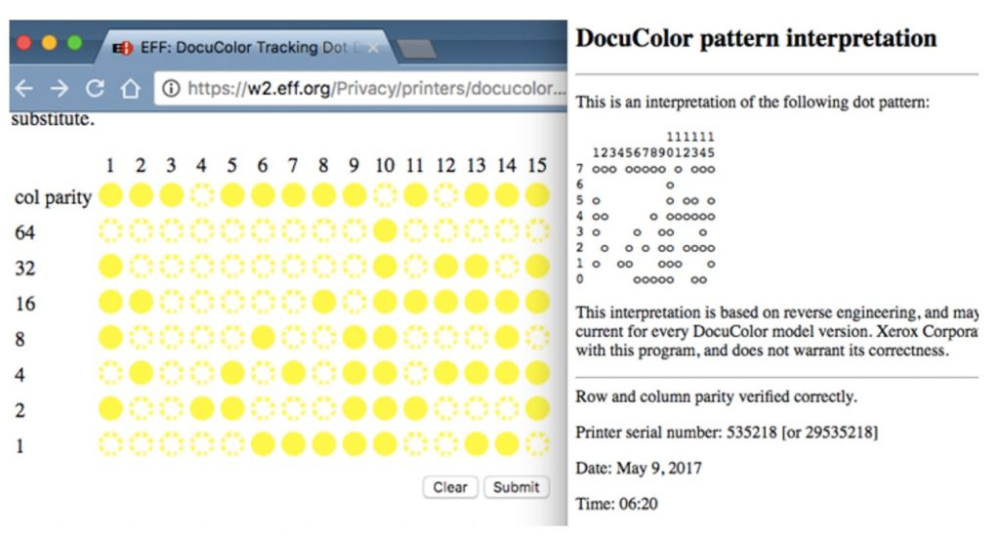

想必都对打印机不陌生，从工厂到家中从企业的文档到街边小巷的字报，无不体现打印机的重要位置，可同时它也出卖了你
美国普渡大学曾经对其进行过研究
被动技术:
条带
一些被动技术来识别激光或“电子照相”（EP）打印机文件，将打印质量缺陷称为“条带，条带发生在打印机构包括旋转滚筒的打印机涂有带电材料，当暴露在光线下。激光有选择地沿着滚筒移动些区域的电荷，这反过来又会吸引打印碳粉以形成字母或图像特征。然后碳粉转移到纸上以形成文档。
滚筒的旋转是可变的，因此任何减速都是可变的导致打印更暗，而加速会导致打印更亮。这导致暗带和亮色交替的水平带
频率
分析这些条带，以获得一个内在特征，即与数据库中存储的已知打印机条带频率匹配。虽然特定的打印机不能目前确定的初步结果表明，带频率足够稳定，可以用作固有频率用于确定打印机型号和制造商的签名，在显示大面积中间色调区域的文档中很容易确定色带频率，但在文本中却很难检测到。很难从文本中检测出来。
图像纹理分析
使用图像纹理分析的技术，可从文件的小区域（如单个文本字符）识别打印机。打印机中的瑕疵会导致传输到文档中的墨粉量波动，这些瑕疵被模拟为纹理，为识别目的提供了一组独特的特征。
首先，扫描文档，然后提取所有字母 "e"，"e "是英语中最常见的字符。e "是英语中最常见的字符。利用分析工具，从每个字符中提取出一组独特的特征，形成每个 "e "的特征向量。
通过将这些特征向量与 5000 个已知特征向量进行比较，对其进行单独分类。并通过多数投票决定最终分类结果。这项技术在测试的 10 种打印机型号中，成功地对 9 种进行了分类，但与条带技术一样，只能确定打印机的品牌和型号。
还包括：
基于匹配的激光打印机的识别打印的字符形状。因印刷过度、字符边缘不整、墨粉密度等原因，单次当由不同的打印机制作时，字符可以具有不同的“形状”。识别技术涉及三个不同的步骤;图像采集、图像预处理和字符匹配。 图像采集使用专业设备获取包含在公文。
预处理涉及各种技术，例如提取某些字符、删除“噪声”并获取二进制图像。然后，这些规范化字符将与字符匹配来自数据库中保存的已知来源的文件。这种匹配技术使用距离变换，一种广泛用于模式识别和图像匹的方法。使用的算法是能够确定与创建可疑文档的打印机最匹配的打印机
-
使用 ImageXpert 打印质量分析仪,获取唯一签名，这可能是用于打印机识别。这些测试由文本、线条和点组成的图案是使用 ImageXpert 分析仪进行评估，以确定各种打印指标，例如:角色参差不齐、过度喷涂、圆点圆度
对文档中的几何退化进行建模来创建打印机配置文件通过印刷。该技术既允许将文档链接到打印机，又可以检测出于身份验证目的记录不一致之处。打印机配置文件的构造和随后的打印机识别通过三个不同的步骤进行。首先，文档是数字化的扫描所有匹配字符的位置，例如，所有字母“A”。一旦所有字符正确对齐和处理，第二步是使用主成分分析，从而提供了一个捕捉复杂退化的模型印刷品。第三步也是最后一步是通过匹配打印机配置文件来使用打印机配置文件进行打印机识别。
具有已知打印机的配置文件。测试了 10 台打印机，每台打印机可生成包含 22,400 份文档的文档字符，所有这些字符都经过处理以创建所需的配置文件。对于十个文档中的每一个创建后，即使在相同品牌的打印机之间，其原始打印机的识别也近乎完美和模型。然而，这些结果只能通过为不同的碳粉水平创建配置文件来实现。未来的工作旨在消除这种碳粉水平的依赖性，并使识别技术更加对相同品牌和型号的打印机敏感。
主动技术:
主动技术将隐藏的信息显式嵌入到文档中，允许该文档与其打印机匹配，信息可能是文档打印机独有的隐蔽数据，也可能是在文档的文本和/或图像中引入故意但已知的缺陷。
与被动技术不同，这种不需要人去调查，购买者会在购买打印机时提供他们的详细信息保存在订单上，这样打印机就会与所有者产生信息绑定，因此，如果文档包含独有的信息，该打印机可以通过打印机保存的信息追溯到其所有者和制造者。
这样的打印机识别率明显高于被动技术，为了使主动技术完全有效，嵌入数据及其后续使用必须保密，而隐藏数据本身仍无法用肉眼检测到，这就是
黄点追踪的由来,黄点追踪就是其中之一的解决方案
用户根本不知道，打印机的一种主动技术自 1980 年代以来，识别一直在使用，这些数据以微观的形式出现，要强调的就是打印机上的黄点追踪技术，暂姑且说是黄点吧，因为总有朋友喜欢和我抬杠说是绿色的点，不管是荧光绿还是黄，都不重要，他会在打印件上添加点阵图案，单点的直径小于1毫米，肉眼是几乎无法看到的，而在显微镜和蓝光下会显现出来，这个黄点有特定编码形式，这个编码形式确保机器输出的文件在数字取证时具备可回溯性，经过转译后能得到打印机的型号，序列号，和打印时间，黄点在整个页面上重复出现，并排列在网格内。这使得不可能通过仅打印来规避，这些点被排列成形成代码或跟踪数据，它的构成可能因厂家而异。
喜欢看一些技术论坛资讯的朋友可能看到过媒体2017年的报道，在美国的一个雇员，她被指控泄露政府的机密文件给媒体，当时是用NSA的打印机打印出来，她也承认自己曾经向The Intercept寄出文件资料，这种泄密想找到内鬼没那么容易，但NSA很快就找到了她，这其中的关键就是当时打印机上具备的黄点追踪技术，就是在打印机输出文件的时候加入追溯副本来源的功能，这个黄点追踪就是解决方案之一，具备这个功能的打印机会在打印件上留下黄点，因为黄点极小，用肉眼看不到，在显微镜和蓝光下就会显现出来，这些黄色点通过特殊规律排列，破译后就可得知打印机型号，序列号和打印件输出的时间。

可以通过将蓝光手电筒照射打印后的纸张，同时通过放大镜仔细检查，嵌入的跟踪数据只有打印机的厂商知道的专有算法去解码，这种打印机识别技术最初是由施乐公司开发的，旨在减轻人们对彩色打印机将被用来生产假币。美国政府是支持这项技术发展的一方，也将其用作涉及打印文件的刑事案件，同时这样的添加可溯源的数据也会出现一些隐私问题，EFF就破译了施乐公司的黄点追踪并且可得出文件的打印时间，产品序列号
不利因素：
电子前沿基金会Frontier Foundation（EFF）揭示了美国进行的将跟踪数据嵌入到印刷品中的事实，应美国政府的要求，打印机制造商，通常将激光彩色打印机与将黄点排列嵌入所有设备。然后，美国特勤局在这些技术的帮助下，使用这些嵌入的隐式数据，通过罪犯制作的文件来追踪造假者和其他重罪犯。以及其他犯罪活动。这种做法也一直在用
打印机公司通常是持有打印机购买者有关的信息，电器零售商也会保留购买者销售期间或通过客户提供保修优惠的信息，厂商也会填写并保存客户的订单信息，例如，某些国家/地区，严格控制打印机等电气设备的所有权和购买，所以记录每个客户的信息是标准配置。
这些公司通常会将所有客户信息保存在数据库中，其内容可以提供给应要求提供政府机构，比如刑侦部门。
美国政府表示，他们只使用文件跟踪信息来调查犯罪行为，我相信绝对不光如此，任何国家任何政府任何政客都不会放过这个可以扩大自己权力的行为，如果一些政策引起民众不满，民众会表达诉求，将宣言打印在纸上，贴在政府大楼或大街小巷，政府会怎么做呢？如果是温和还能认真情感听诉求，怕的就是权力越界的现象，通过纸张找到你这个人，那么这是非常不利的。
信息安全以及打印机行业内的人多年来一直知道黄点追踪，但不必将此功能告知客户，知道的人也没办法别无选择，黄点追踪不仅仅是在昂贵的彩色打印机，它是出现在所有价位的打印机中。
这种技术是侵害保护个人数据的权利，是公然违反人权，在政治上，印刷文件已成为言论自由的重要工具，匿名出版在许多国家，分发此类材料仍然是重要的政治沟通渠道。匿名的权利受到威胁，那么匿名表达的人也会受到威胁。
组织抗议，政治文件，都有被追踪的风险，记者，举报人，持不同政见者可能会面临风险，一些人会不会用这个技术去打压异己呢？
当然可以参考电子前沿基金会的网站上查证及将打印件图像解码查询链接留在后方
EFF：Electronic Frontier Foundation